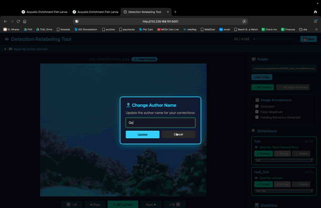
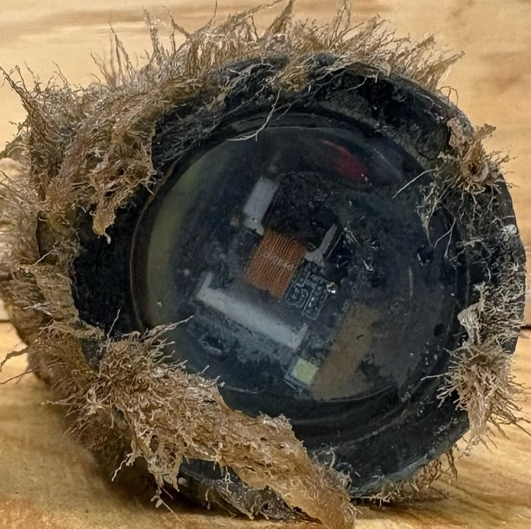
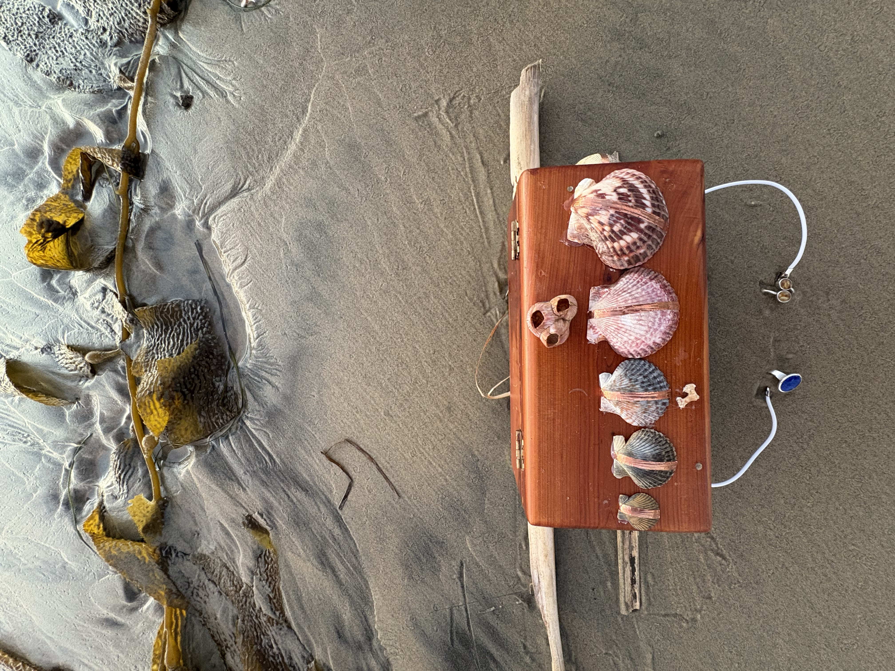
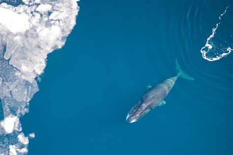
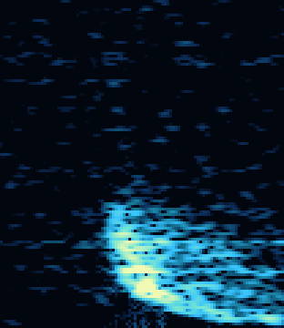
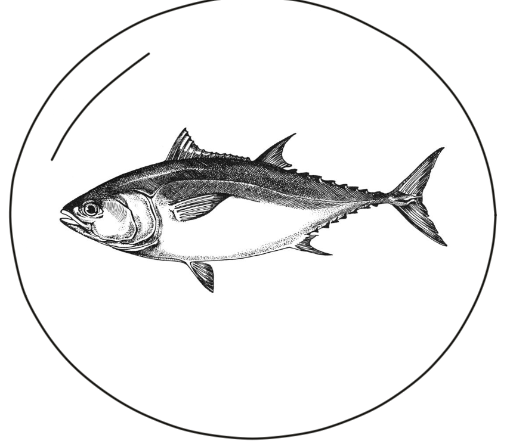
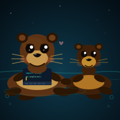

2026 Detect All The FishLiving DigiJournal of Zero-Shot Transfer Learnings with Community Fish Detector

2026 No wiper? No problem. We've got you coated. Plus, a deep dive into collaborative prototyping with the Scripps Sandbox MakerspaceLong-term autonomous underwater cameras use SLIPs to prevent biofouling.

2026 Shellfegio SynthesizerShellfegio Synthesizer
 2025
Play with fish larvae data
2025
Play with fish larvae data
Acoustic Enrichment for Accelerated Reef Restoration

2025 Explore clustered bowhead whale dataUnsupervised Clustering of Beaufort-Chukchi-Bering Bowhead Whale Data

2026 Play piano with real Arctic bowhead whale callsBowhead Whale Piano — 88 keys, 88 real Arctic bowhead whale vocalizations
2026
Reef Sound Archive
Coral Reef Acoustic Field Recordings
 2024
Read more about how to use autonomous cameras for larval fish detection
2024
Read more about how to use autonomous cameras for larval fish detection
Underwater Autonomous Long Term Visual Monitoring

2020 MIT MAS Masters ThesisEmerging Computational Methodologies for Transparency in Fisheries
2021
Gulf of Mexico Reef Fish Dataset
Seminal Dataset Fine-Grained Visual Categorization Workshop Paper (CVPR21)
 2020
Interact with GANs output for physics based climate change induced flooding patterns
2020
Interact with GANs output for physics based climate change induced flooding patterns
Earth Intelligence Engine
 Polyp Pod
Immersive Ocean Science
Polyp Pod
Immersive Ocean Science
SciArt Installation Design Towards Reimagning the Aquarium
 2020
Meet the GANimals
2020
Meet the GANimals
Interpolating GANs to Scaffold Autotelic Creativity Joint Proceedings of the ICCC 2020 Workshops (ICCC-WS 2020)

2026 AI Empowered Research CurriculumAI Empowered Research Curriculum — A PhD Student's Perspective on AI-Enabled Ocean Science